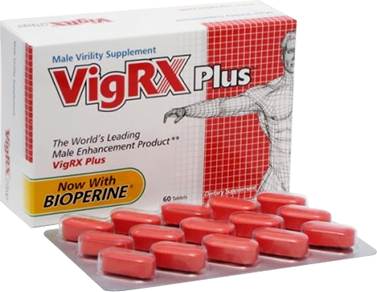

For quality of ingredients and the top-notch methods of manufacture, nothing measures up to VigRX. We use only the very best herbal and natural ingredients, then prepare the VigRX formula to the most exacting standards in the industry. VigRX is created and bottled in a cGMP pharmaceutical-grade laboratory by trained specialists to ensure you get the freshest, most effective pill possible.
Other formulas try to copy VigRX, or haphazardly toss together some of the ingredients in VigRX -- but they all come up far short.Only VigRX has this precise formula in exactly the right proportions to bring you to your sexual best.
Epimedium Leaf Extract EPIMEDIUM SAGITTATUM
For over 1600 years, epimedium has been used as a tonic for the reproductive system to boost libido and treat impotence. Modern medicine is able to back these traditional uses by showing that epimedium modulates levels of the primary stress hormone, cortisol. That's important because under high-stress/high-pressure conditions, the cortisol levels normally go up, causing fatigue and suppressing the sex drive. By bringing cortisol levels back to normal, energy levels and libido are restored, too. What's more, animal studies link epimedium to a reduction in bone loss and body fat, and an increase in muscle mass, all of which contribute to the balance of cortisol in the body. Other studies show that epimedium can bring low levels of both testosterone and thyroid hormone back to their normal levels, which lends even more support to epimedium's traditional use in improving the libido.
Muira Pauma Bark Extract PTYCHOPETALUM OLACOIDES
uscuta is referred to in the vernacular as "dodder seed," from vine plants that produce small brown seeds with powerful effects on the male reproductive system. Treasured in Chinese traditional medicine for its effects on longevity and male virility, cuscuta is prescribed by herbalists and health practitioners to control nocturnal emissions, frequent urination, and to treat impotence in men. Some herbal practitioners will also use cuscuta to treat premature ejaculation and low sperm count that arise from kidney deficiencies.
Human clinical trials also showed these effects on 50 patients with impotence treated with a combination of Epimedium and Cuscuta for 50 days: 76% (38 patients) experienced total recovery and 16% (8 patients) were improved, for a total effectiveness rate of 92%. After 2 years, these subjects showed no recurrence of impotence.
Ginkgo Leaf GINKGO BILOBA
Another treasured herb from the Orient, ginkgo is known to improve blood flow to the brain and greatly benefit microcirculation - that is, blood flow at the capillary level. As a sexual aid, ginkgo puts its circulatory effects to work on the genitals, increasing the ability of the penis to fill with more blood during an erection and heightening the sensitivity of nerve endings in the genital area. A 1989 study and others indicate that ginkgo may be extremely beneficial in treating impotence or erectile dysfunction; in this research, all the patients who were treated with ginkgo responded with dramatic improvement in the ability to achieve and maintain erection. Ginkgo is proven in scientific studies to improve memory, effectively treat senile dementia, and treat headaches; it is also a very effective free-radical scavenger, making it one of the keys to youthfulness.
Asian Red Ginseng PANAX GINSENG
Current clinical and scientific trials indicate that ginseng is an effective treatment for male infertility, once again backing up the traditional use of a popular herb. Panax ginseng promotes the growth of the testicles, increases sperm formation and boosts testosterone levels, all of which leads to not only more frequent sexual activity due to greater desire, but also better performance and greater potency. Centuries of use as an aphrodisiac and virility aid stand behind this herb in many asian cultures.
Saw Palmetto Berry FRUCTUS SERENOAE
Native Americans and early American settlers used Saw Palmetto to treat problems associated with the genitals, urinary tract and reproductive system. This herb is called the "plant catheter" due to its therapeutic effect on the neck of the bladder and the prostate in men. Saw palmetto is widely used in Germany, Canada, the United Kingdom and the U.S. for nutritionally benefiting the prostate and urinary tract. Saw palmetto berries have long held a reputation as sexual stimulants and aphrodisiacs. Their largest use today is as a supplement for reducing enlarged prostate glands, treating urinary tract problems and for improving body strength.
Saw palmetto has shown significant action in treatment of conditions associated with benign prostatic hypertrophy (BPH) - in fact, this herb is marketed as a prescription drug in Europe and is widely prescribed for BPH. Saw palmetto extract prevents testosterone from converting into dihydrotestosterone, the hormone thought to cause prostrate cells to multiply which leads to an enlarged prostate.
Muira Pauma Bark Extract PTYCHOPETALUM OLACOIDES
Perhaps one of the best herbs for treating impotence, erectile dysfunction or lack of sex drive, muira puama is a Brazilian shrub that's prominent in South American folk medicine. A number of current scientific studies attest to the plant's dramatic benefits to sexual function and libido. While the exact chemical action of muira puama is still unknown, the plant is clearly of benefit both psychologically and physically to men suffering from many types of sexual dysfunction or difficulty.
Saw palmetto has shown significant action in treatment of conditions associated with benign prostatic hypertrophy (BPH) - in fact, this herb is marketed as a prescription drug in Europe and is widely prescribed for BPH. Saw palmetto extract prevents testosterone from converting into dihydrotestosterone, the hormone thought to cause prostrate cells to multiply which leads to an enlarged prostate.
Catuaba
A well-respected traditional cure for everything from impotence to flagging sexual desire and poor sexual performance, this Brazilian species is a must-have for men seeking better sexual vitality. South American men have used this remedy for centuries under the guidance of their tribal and traditional healers as an aphrodisiac and male potency booster. Today, based on clinical trials, we know that this South American herb is a central nervous stimulant with sexual enhancement properties, with particular importance to men seeking help with sexual impotency, agitation, nervousness, and sexual weakness. In Europe and the United States, many herbalists and naturopaths now prescribe catuaba as an aphrodisiac, a brain and nerve stimulant, and for impotence. Catuaba contains alkaloids, tannins, aromatic oils and fatty resins, phytosterols, cyclolignans, sequiterpenes, and flavonoids -- all substances that have been shown to increase sexual desire and increase erotic dreams and daydreams for both men and women. No toxicity has been reported throughout catuaba's long history of use in Brazil.
Cuscuta Seed
This herb, very popular in Europe for centuries and used by native peoples in North America long before Europeans arrived, has a strong and powerful effect on the circulatory system and heart. It's particularly prized for its protective effect on the cardiovascular system and blood pressure. Since it seems to work by opening up the arteries, it increases the heart's energy supply and enhances its pumping power. Many herbalists and natural compounding pharmacists will include hawthorn in male enhancement formulas because this effect may extend to the penis as well: better blood flow and energy to the genitals means better performance.
